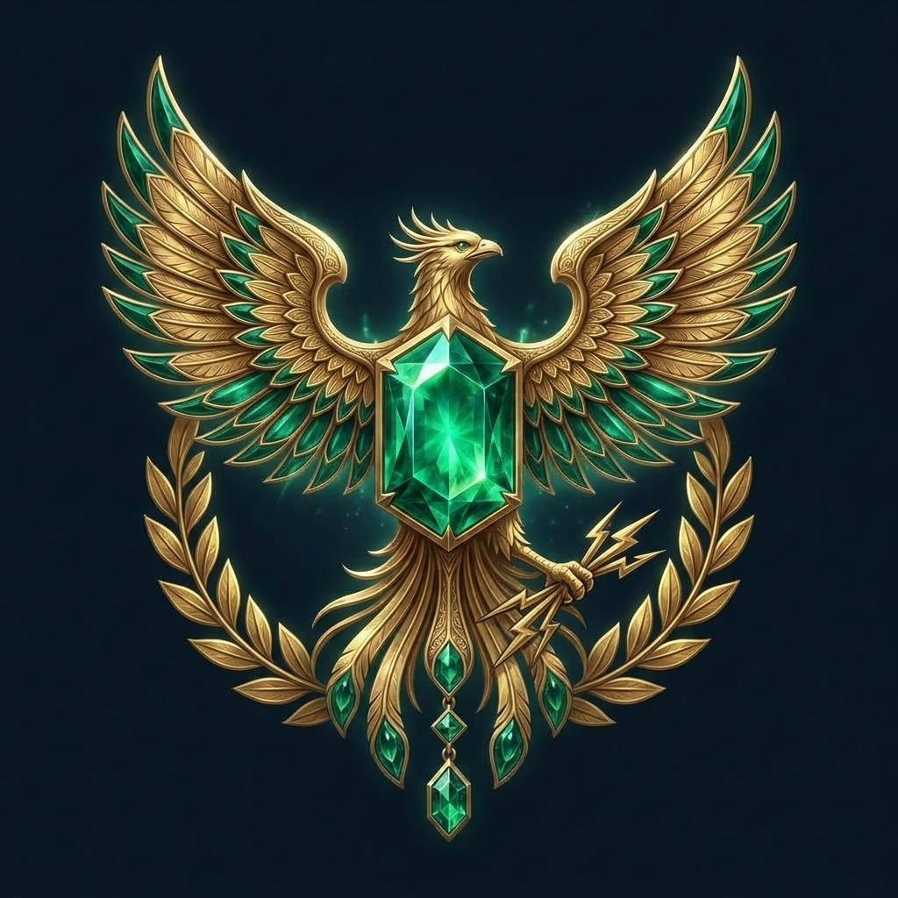
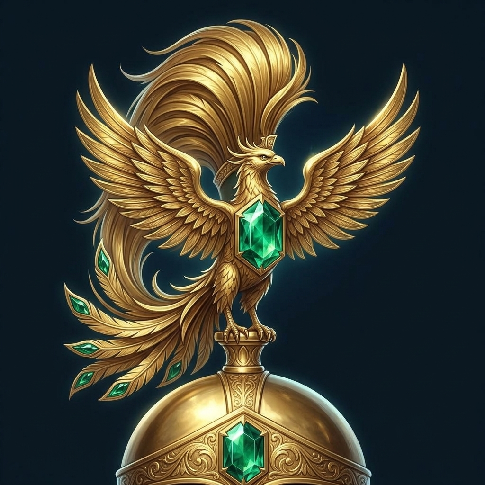
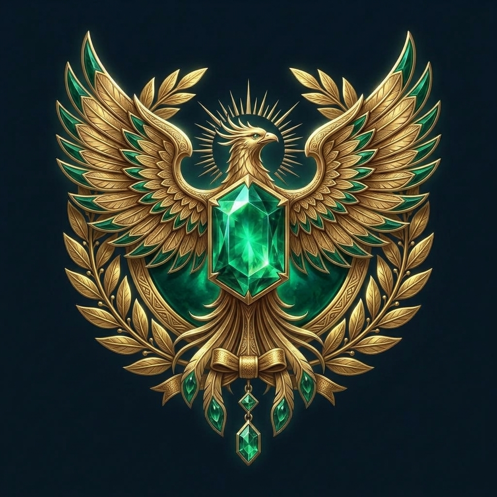

R-315 — Fenice romana: tre direzioni per il centerpiece

A — aquila-1aquila legionaria: corona d'alloro, fascio di fulmini, gemma centrale

B — galea-1cimiero su cupola di galea cesellata, coda a pennacchio da centurione

C — sol-1corona radiata Sol Invictus, medaglione d'alloro con fiocco